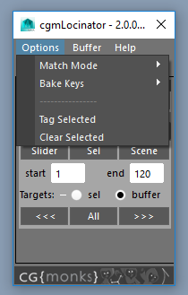
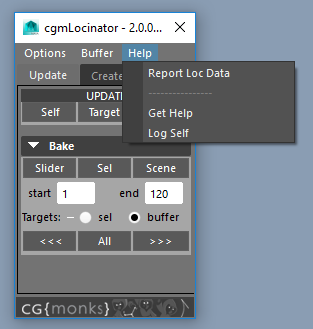
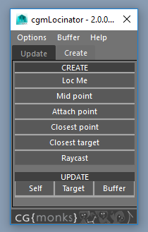
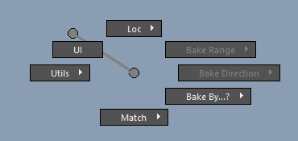
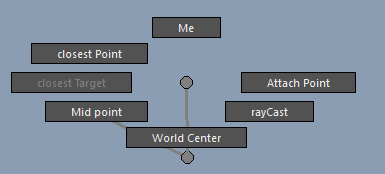
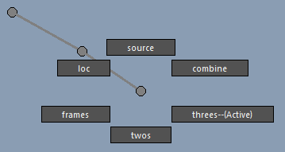
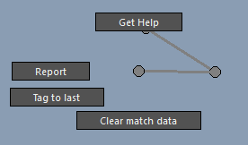

Locinator¶
Status: Alpha release
Last Updated: August 2017
Overview¶

Until we get embeded video sorted. Please use this link: https://player.vimeo.com/video/205330429
cgmLocinator is a tool for matching objects to locators or other objects as well as creating update-able locators in a myriad of ways.
In early 2017, we undertook a rewrite of cgmLocinator as a part of our new marking menu push and core rewrite. New locator types and a conversion from a traditional ui to a marking menu are a part of this push.

What can I do with it?
- Track a ball in a characters hand for a short while
- Snap a foot or hand in world space over time if the rig you are using does not support space switching
- Track a mid point
- Give a character multiple hand hold positions on a staff or other prop to snap to.
Accessing¶
- UI
- Top cgm menu -
CGM> animation> cgm.locinator - 1.0(legacy) is in the
CGM> Open Tool Window - Marking menu (several of them) -
Locinator
- Top cgm menu -
- Python
import cgm
cgm.core.tools.locinator.ui()
UI¶
If you open the ui, you should see something like this:
The UI has to main parts. The top menu and the tab section.
Tip
Most things that are in the UI may be accessed in the Marking Menu and vice versa.
Menu¶
The top menu is where we can set options and mess with the buffer.
Options¶
Match Mode

Change between the match mode options.
- Match Mode Options
point- Only snap positionorient- Only rotationpoint/orient- both
Bake Keys

loc- use keys of the locsource- use keys of the sourcecombine- combine keys of bothframes- every frame in rangetwos- in range, on twosthrees- in range, on threes
----------------
Tag selected- Tag any objects to a locator or another objects as their match targetsClear selected- removes the attributes used for our purposes
Buffer¶
See the Match Buffer tutorial for more details.

Define- Whatever is selected will now be the bufferAdd Selected- Append to the bufferRemove Selected- ...Report- Report the buffer to the script editorSelect Members- Select the bufferClear- Empty the buffer
Help¶
Report Loc Data- gives a rundown on out your selected is seen by the locinator systemGet Help- WIPLog Self- Dev tool. Reports what is locally stored to our ui.
Tabs¶
Update¶
Bake¶
As a refresher, it should look like this:
Update
Self- For each item you have selected, will update it if a loc, will match it if it has a cgmMatchTargetTarget- For each item you have selected will update their cgmMatchTarget. If that target is a loc, will upate it as such.Buffer- Updates any objects in your buffer. If your buffer is empty, it gave your index finger a bit of exercise.
Bake
Slider- Bake the time sliderSelected- Bakes selected time rangeScene- Bakes the sceneTargets
sel- Working with selected objectsbuffer- Working with buffer objects
<<<- Back in timelineAll- All frames following the other settings>>>- Forward in timeline
Create¶
The create tab looks like this:
Loc Me- Creates a fromObj per object selected. Supports most components.- Mid Point - Creates midPoint loc based on selection
AttachPoint- Creates an attach point via rayCast follicle and a fromObj loc to go with it.Closest Point- Creates closestPoint loc with the first object in selection being the source.Closest Target- Creates closestTarget loc with the first object in selection being the source.RayCast- Single on surface loc cast. For more options see the Ray create menu in TD mode or the cgmMarking Menu.
Update
Self- For each item you have selected, will update it if a loc, will match it if it has a cgmMatchTargetTarget- For each item you have selected will update their cgmMatchTarget. If that target is a loc, will upate it as such.Buffer- Updates any objects in your buffer. If your buffer is empty, it gave your index finger a bit of exercise.
Marking Menu¶
The marking menu is designed to make most locinator functionality within a single button press. In most menus it's in the root radial.
If you mouse over that you should get something like this:
Let's dig in!
Loc(N)¶
This is our creation section. We can create all our differnent locator types here.
Me(N) - Creates a fromObj per object/component selected. Supports most components.Closest Point(NW) - Creates closestPoint loc with the first object in selection being the source.Closest Target(W) - Creates closestTarget loc with the first object in selection being the source.Mid Point(SW) - Creates midPoint loc based on selectionRayCast(SE) - Single on surface loc cast. For more options see the Ray create menu in TD mode or the cgmMarking Menu.AttachPoint(E) - Creates an attach point via rayCast follicle and a fromObj loc to go with it.World Center(S) - self explanatory
UI(NW)¶
Opens the ui. That's all.
Baking(NE,E,SE)¶
We covered Baking in general in the UI section. You can access most of those same features in the marking menu.

Bake Direction(E)¶
Directional baking

Forward- Bake after current frameSlider- Entire sliderScene- yup.
Back- Bake before current frameSlider- Entire sliderScene- yup.
Combined- Combine the key indices of both and key on those intervals.
Bake by...?(SE)¶
This is for changing our options. of the keys of the source or the loc, or both. You can also change the by frame options.
loc- Use the keys of the locatorsource- Use the keys of the sourcecombine- Use the combined keys of both. For example, if you have a keys on 10,20,30 on the hand and 21-26 on the locator. You'll get 10,20,21,22,23,24,25,26,30 on the bake.frames- Use the key frames only.twos- Bake by twosthrees- Bake by threes
Utils(W)¶
Tag to last as cgmMatchTarget- Tag any objects to a locator or another objects as their match targetsClear match target data- removes the attributes used for our purposesReport- gives a rundown on out your selected is seen by the locinator systemHelp- WIP
Match(S)¶

Self- For each item you have selected, will update it if a loc, will match it if it has a cgmMatchTargetTarget- For each item you have selected will update their cgmMatchTarget. If that target is a loc, will upate it as such.Buffer- Updates any objects in your buffer. If your buffer is empty, it gave your index finger a bit of exercise.
Tutorials¶
Match Buffer¶
Sometimes you wanna update stuff regardless of what you have selected. That is what the match buffer is for.
You can access it via buffers>match where you will find several options. More on that in a moment.

- Select what you want to buffer to match update
cgmMM> buffers> match> define- Select whatever or nothing
cgmMM>snap>match>buffer- Updates buffer objects regardless of selection
The way this buffer works is via an optionVariable in maya which is cool in that it is maintained between maya sessions but not so great as data is stored by strings. With that in mind, let us look at the rest of the buffer menu items.

- Define - Define your presently selected objects as the match buffer. It is an ordered list
- Add Selected - Append to the list
- Remove Selected - Remove from the list
- Report - Reports what is stored in the script editor
- Select Members - Select your buffer objects
- Clear - Wipe the buffer
attachPoint Loc Setup¶
This is most handy for a fast and dirty snap to point that tracks another surface you want to follow. Like if you wanted a point on a sword or a character hip to come back to without a constraint setup.
Tip
This concept is also demoed in the video in the overview: Overview
How might we do this?
- Select the control or object you wanna track to a mesh (skinned or not)
cgmMM> Locinator> Loc> Attach Point- A fromObj locator is created and a rayCast context will begin.- Press your mouse down on the surface you want to attach to and you will see a locator start dragging on thesurface, when it is where you wanted it, release.
- A follicle will be created at that point and your new loc will be parented to that follicle.
Now, whenever you want to snap to that point, just select your original control and
cgmMM> Locinator> Match> Self OR cgmMM> Snap> Match> Self.
You can also bake that tracking over time using the baking menu in Locinator.
Tip
Do not loc a skinned object and expect your loc to track. Track a point on that object and you are fine. It attempts to find the nonintermediate object to track but there may be bugs.
Concepts¶
- Locator modes
- fromObj - Locator is created that matches it's source object so that they may be snapped back and forth between them. May be component or transfom
- midPoint - Midpoint of specified targets. Targets may be transforms or components. If one target is specified, it updates to the boundingbox center of the target, otherwise it updates to the midpoint of the stored targets
- closestPoint - Closest point on the surface of the targets to the source. Targets may be curves, nurbs or mesh
- closestTarget - Closest transform or component target to the source
- rayCast - Created by casting a ray at a surface. Creation data is stored for updating.
- attachPoint - Ease of use setup for having a match target that tracks another object.
- Updateable loc - Information is stored on a loc at creation that allows it be recreated. When you have a loc selected that has been created with locinator you may press Locinator>match and it will update the locator to it's new position and rotation (if applicable)
- Source - This is the creation target of a given loc.
- Matching - An object may have only one cgmMatchTarget. When you create a loc from an object, this relationship is automatically setup. What this means is that if you have an object selected and select
Locinator>Match, the object will snap to it's match target based on your match mode options. - Baking - When you want to match either a loc or a source object over time. There are several modes. See below.
- OptionVar - OptionVars are a maya preference variable that you can store data to. They are a handy way of storing preferences and options between multiple guis. We use a lot of them.
- Match Buffer - Buffers are something we use in most of our uis. They're a way of specifying objects to do other stuff to without a gui or selection required.
- Match Mode Options
- point - Only snap position
- orient - Only rotation
- point/orient - both
- cgmMarkingMenu - Root for this for our purposes. More info here. Abbreviating as cgmMM.